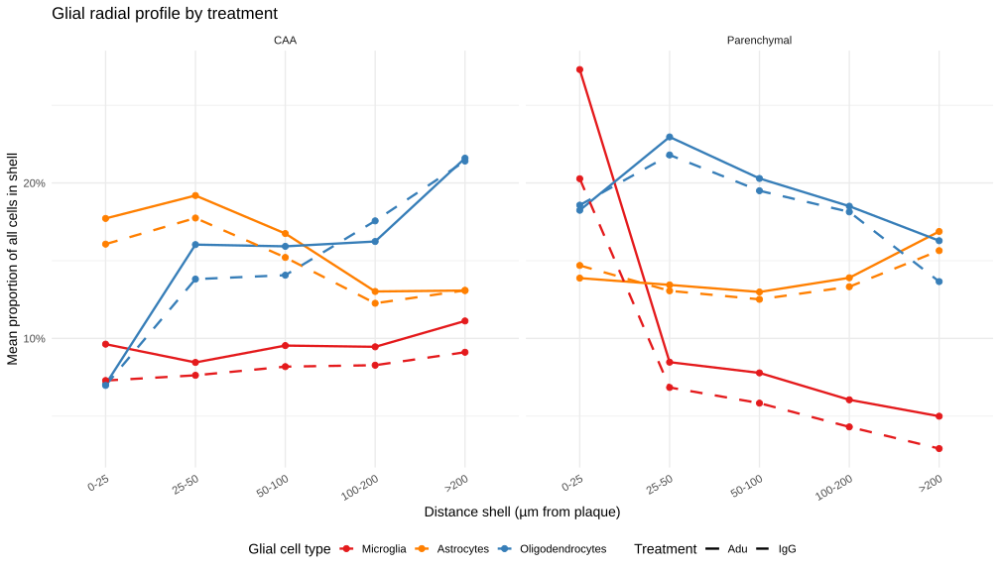

Cell-type composition in concentric distance shells around plaques
Published
March 24, 2026
Rationale
Previous notebooks characterise the niche composition within a fixed 50 µm radius around plaques. Here we extend this to concentric shells to ask whether the possible interaction microglia-astrocytes-oligos has a spatial architecture.
Shells (distance to nearest plaque):
Shell
Range (µm)
1
0 – 25
2
25 – 50
3
50 – 100
4
100 – 200
5
> 200
Analysis is run separately for CAA and parenchymal plaques, and separately for Adu and IgG treatment groups.
Setup and data loading
Code
source("R/setup.R")library(patchwork)data <-load_slides_and_distances("full")slide1 <- data$slide1; slide2 <- data$slide2cell_distances_all <- data$distances_all# Add cell-type and sample metadata to the distance tablemeta_lookup <-bind_rows( slide1@meta.data |>as_tibble(rownames ="cell") |>select(cell, annotatedclusters), slide2@meta.data |>as_tibble(rownames ="cell") |>select(cell, annotatedclusters))cells_with_meta <- cell_distances_all |>left_join(meta_lookup, by ="cell")############################### Cell-type abundance check#############################cells_with_meta |>count(annotatedclusters, Treatment.Group, name ="n") |>arrange(desc(n)) |>kbl(caption ="Total cells per annotated cluster and treatment") |>kable_styling("striped", full_width =FALSE)
For each brain (sample_ID), plaque type, and distance shell, we compute the proportion of each cell type among all cells in that shell. Proportions are then averaged across the 6 brains for the group-level profile, and separately within Adu and IgG groups.
Cell-type composition in each distance shell. Each bar shows the mean proportion of each cell type among all cells in that shell, averaged across all 6 brains. Left: CAA plaques; Right: Parenchymal plaques. Top: Adu; Bottom: IgG.
Changes in cell-type composition across distance shells
Proportion of each glial cell type (relative to all cells in that shell) across distance shells. Points show the mean across 6 brains; error bars are ±1 SE. If the three-layer relay holds, microglia should peak in the innermost shell (0–25 µm), with astrocytes and oligodendrocytes showing broader or more distal peaks.
Adu vs IgG comparison
Code
ggplot(props_glial,aes(x = shell, y = mean_prop,colour = glia_type, linetype = Treatment.Group, group =interaction(glia_type, Treatment.Group))) +geom_line(linewidth =1.1) +geom_point(size =2.5) +facet_wrap(~ plaque_type, ncol =2) +scale_colour_manual(values = glial_colours) +scale_linetype_manual(values =c("Adu"="solid", "IgG"="dashed")) +scale_y_continuous(labels = scales::percent) +labs(title ="Glial radial profile by treatment",x ="Distance shell (µm from plaque)",y ="Mean proportion of all cells in shell",colour ="Glial cell type",linetype ="Treatment" ) +theme_minimal(base_size =14) +theme(axis.text.x =element_text(angle =30, hjust =1),legend.position ="bottom" )

Glial radial profiles split by treatment. Solid = Adu, dashed = IgG. Divergence between treatment lines within a shell suggests treatment-dependent spatial reorganization.
Summary table: peak shells per cell type
Code
# For each glia type, plaque type, treatment: which shell has the maximum mean_prop?props_glial |>group_by(glia_type, plaque_type, Treatment.Group) |>slice_max(mean_prop, n =1) |>ungroup() |>select(glia_type, plaque_type, Treatment.Group, peak_shell = shell, peak_prop = mean_prop) |>mutate(peak_prop = scales::percent(peak_prop, accuracy =0.1)) |>arrange(plaque_type, glia_type, Treatment.Group) |>kbl(caption ="Peak shell for each glial cell type by plaque type and treatment") |>kable_styling("striped", full_width =FALSE)
Peak shell for each glial cell type by plaque type and treatment